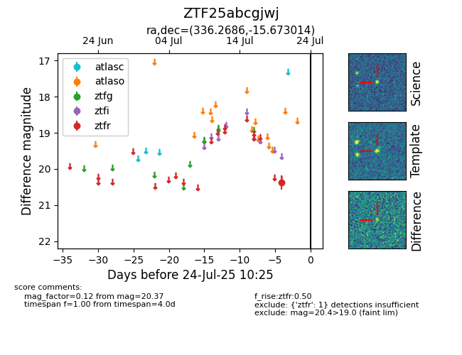

Target ZTF25abcgjwj at 2025-07-24 10:25, see:
FINK: fink-portal.org/ZTF25abcgjwj
Lasair: lasair-ztf.lsst.ac.uk/objects/ZTF25abcgjwj
ALeRCE: alerce.online/object/ZTF25abcgjwj
alt names
ZTF25abcgjwj (ztf,fink)
coordinates:
equatorial (ra, dec) = (336.2686,-15.67301)
galactic (l, b) = (43.9813,-54.21295)
photometry
last ztfr=20.37
1 ztfr detections
